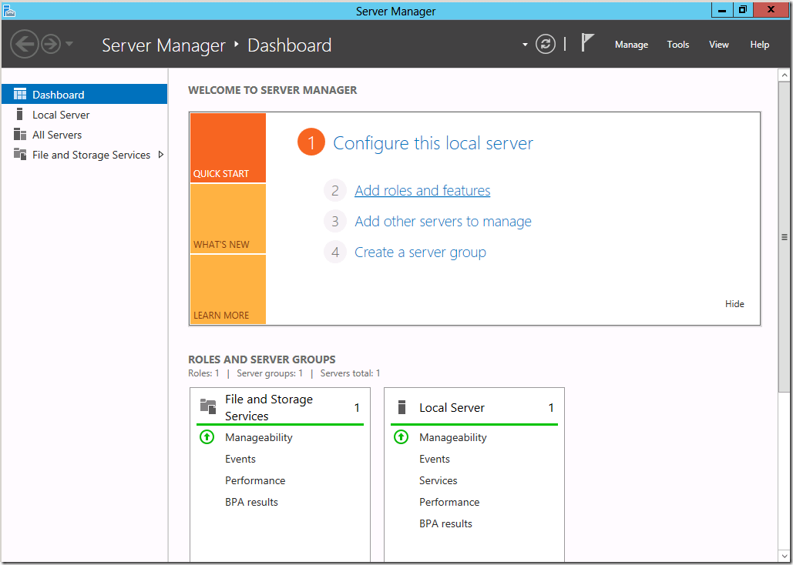
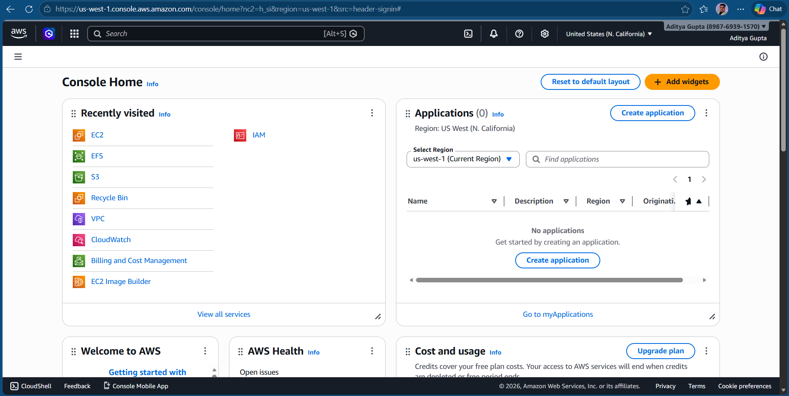
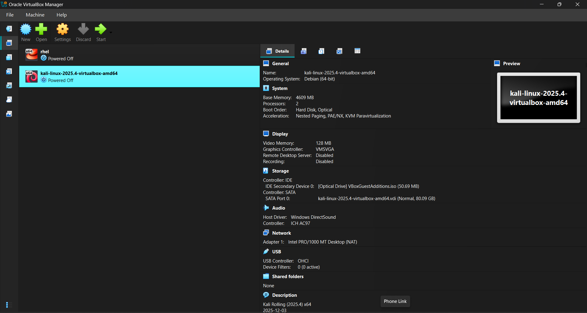
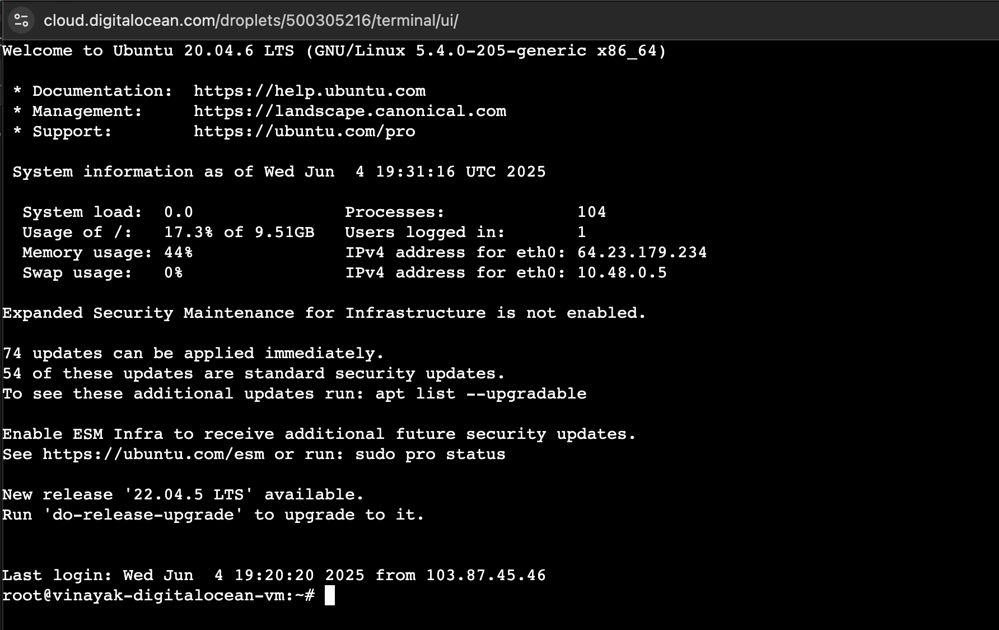
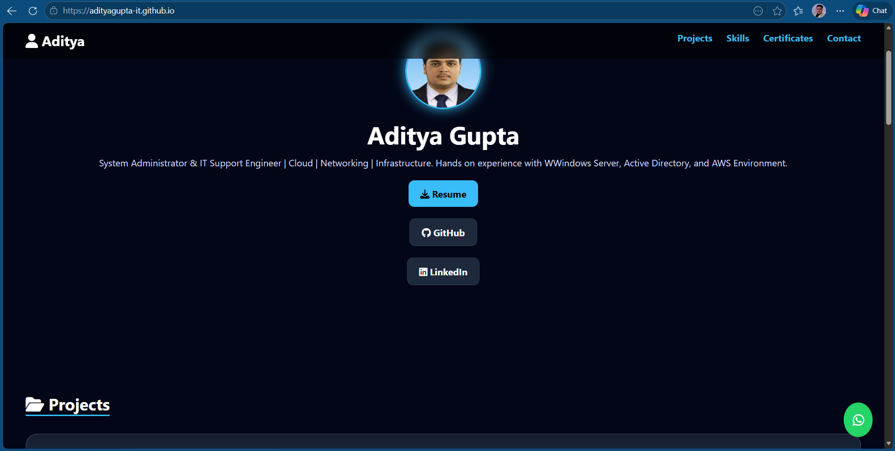
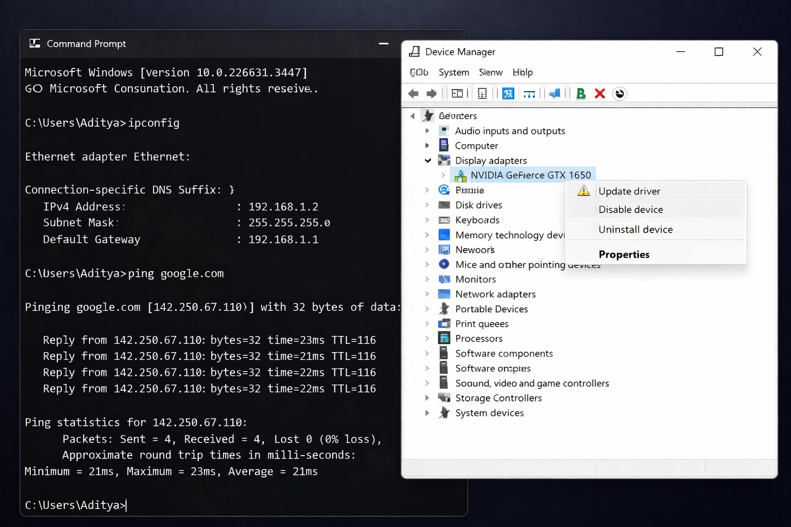

Aditya Gupta
System Administrator & IT Support Engineer | Networking | Cloud | Infrastructure
Hands-on experience in Windows Server, Active Directory, AWS, and Linux environments.
Skilled in network configuration, troubleshooting, virtualization, and system administration.
Resume
GitHub
LinkedIn
Projects
Network Infrastructure Lab (Cisco Packet Tracer)
• Designed and implemented network topology using VLANs, IP addressing, and subnetting
• Configured DNS and DHCP services
• Performed real-time troubleshooting and connectivity testing
• Configured and verified network connectivity using ping and traceroute commands
Tools: Cisco Packet Tracer

Active Directory & Windows Server Deployment
• Configured Windows Server with Active Directory Domain Services
• Created and managed users, groups, and policies (GPO)
• Implemented centralized security and access control
• Joined client machines to domain and tested centralized authentication
Tools: Windows Server 2019

AWS Cloud Infrastructure Setup
• Deployed cloud infrastructure using EC2, S3, and VPC
• Configured networking and security groups
• Ensured scalability and high availability
• Launched and configured EC2 instances with secure access and key pairs
Tools: AWS Console

Virtualization & VM Management
• Created and managed virtual machines using VMware and VirtualBox
• Installed multiple operating systems (Windows, Linux)
• Configured isolated lab environments for testing and simulations
• Optimized system resources and performance
Tools: VMware, Oracle VirtualBox

Linux Server Configuration
• Installed and configured Linux server environments
• Managed users, permissions, and file systems
• Configured basic services and performed system monitoring
• Executed troubleshooting for system and service issues
Tools: Linux (Ubuntu/CentOS), Terminal

Data Backup & Recovery System
• Implemented backup strategies for system data protection
• Performed backup and recovery testing
• Ensured data integrity and disaster recovery readiness
• Automated backup processes for reliability
Tools: Windows Backup, Linux Tools

GitHub Portfolio Website Hosting
• Designed and deployed personal portfolio website using GitHub Pages
• Implemented responsive design and modern UI
• Integrated project showcase, certificates, and resume download
• Managed version control and updates using Git
Tools: GitHub Pages, Git, HTML, CSS

IT SUPPORT TROUBLESHOOTING LAB
• Diagnosed and resolved hardware and software issues
• Troubleshot network connectivity problems (IP, DNS, DHCP)
• Performed OS installation, driver setup, and system updates
• Provided end-user support and system maintenance
Tools: Windows OS, Device Manager, Command Prompt
